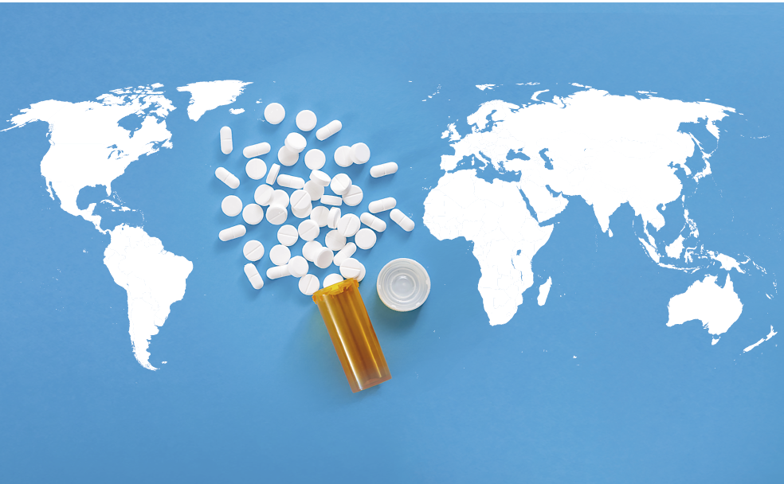

El tramadol no tiene quien le escriba y convierta en mito. La morfina, la metadona y, por supuesto, la heroína, cuentan con toda una literatura detrás que las han convertido en iconos contraculturales, símbolos de un tiempo y sus inquietudes. Pero este medicamento carece de esa pátina, como sucede con otros opioides, fármacos sintéticos surgidos en el laboratorio para aplacar el dolor y que se han convertido en drogas estimulantes. Hace tres años, el presidente Trump declaró el estado de emergencia sanitaria nacional ante las dimensiones de un consumo que, tan sólo en su país, se cobraba miles de vidas cada mes.
El gigante al otro lado del Atlántico es su mayor importador y, sorprendentemente, Benin, un país pobre con 11 millones de habitantes, es el segundo receptor. Existen varias razones para explicar este fenómeno, aunque, sin duda, la asequibilidad se ha convertido en la mejor arma de seducción. «En España el 96% de los opiáceos sintéticos están dispensados bajo prescripción médica y la oferta farmacológica psicoactiva es amplia, lo que disuade a los consumidores de buscarla por otras vías», explica David Pere Martínez Oró, director técnico de la asociación de investigación Episteme y coordinador de la Unidad de Políticas de Drogas en la Universidad Autónoma de Barcelona. «La situación es muy distinta en un país con sanidad fundamentalmente privada como Estados Unidos, donde se pueden comprar recetas».
El consumo abusivo de fentanilo, considerado cincuenta veces más potente que la heroína, la oxicodona y la hidrocodona, productos legales prescriptos por doctores, se hallan detrás de la muerte de más de 20.000 personas en aquel país, más de la mitad de todos los fallecidos a causa de las drogas. Las dimensiones de este tráfico han incentivado una producción sin control oficial a cargo de los cárteles mexicanos y que pretende competir tanto en el mercado del país vecino como introducirse en Europa, a través de los oficios de la Ndranghetta calabresa. El puerto italiano de Gioia Tauro, habitual receptor de la cocaína americana, también constituiría la nueva puerta para este tipo de sustancias.
Las nuevas drogas carecen de mística alguna, pero reflejan la geopolítica contemporánea. Las milicias yihadistas, rigurosas en sus costumbres, han adoptado el tramadol como instrumento de combate para sus miembros y herramienta de negocio. Posiblemente, cuentan con socios italianos y de Oriente Medio. Los apresamientos han desvelado un flujo desde los puertos libios hacia el interior del Sahel, vehiculado por las fuerzas del Estado Islámico. Otros cargamentos tienen a Togo y Nigeria como plataforma de distribución. Al parecer, las potentes mafias locales lo diseminan por la región del Golfo de Guinea, y la banda Boko Haram se encarga de abastecer el corazón del continente. Los testimonios de antiguos combatientes aseguran que los comandantes les proporcionaban pastillas para incrementar su valor antes del combate.
Pasaporte para el escapismo
El peligroso fentanilo se elabora en China, mientras que los 'dealers' islamistas adquieren alijos llegados desde India, convertida en la principal fábrica de tramadol. El fármaco es un analgésico legal, ajeno al control de medicamentos peligrosos, pero el clandestino contiene dosis mucho más elevadas de gran pureza. Frente a las pastillas de 50 miligramos dispensadas por conductos reglamentarios, aquellas que se venden en la calle por menos de un euro pueden alcanzar los 120, 200 o 250 miligramos, generar un efecto energizante muy adictivo e, incluso, provocan sobredosis, alucinaciones o problemas cardiacos.
El fármaco se antoja un pasaporte para el escapismo en contextos complejos, donde la esperanza escasea. Los adolescentes se inician en su consumo con suma facilidad y la capacidad de seducción ha alcanzado todos los estratos sociales, lo que facilita esa penetración prácticamente impune. Como ocurre con los grupos armados, muchos patronos la proporcionan a sus empleados para incrementar la productividad. Además, la mayoría de los países implicados cuenta con Administraciones débiles y la corrupción lastra a sus fuerzas de seguridad. No se conoce el número de consumidores habituales, pero los estudios apuntan a su elevada incidencia en lugares como la ciudad de Maiduguri, la capital de la insurgencia nigeriana, donde se estima que un tercio de los jóvenes lo toma para huir de la inseguridad que reina en el lugar. Ese vínculo entre el bienestar que produce y las condiciones de estrés generalizado de la población parece explicar también su expansión en Palestina.
Las estrategias contra el abuso se enfrentan a problemas insoslayables. Las firmas que lo producen legalmente se niegan a cualquier medida prohibitiva y aducen su función analgésica, especialmente recomendada en niños enfermos de cáncer. «Existe una gran discusión sobre los maneras de combatir este problema», aduce Martínez Oró. «¿Qué el Estado monopolice la producción y distribución? ¿Establecer un sistema de licencias? ¿Un programa de dispensación? Lo que está claro que el modelo de estricta prohibición no funciona».
El tramadol carece de cualquier épica, aunque se considera una epidemia en Estados Unidos. Su relativa invisibilidad puede deberse a que la mortalidad generada aparece camuflada junto a otros opioides no menos nocivos como la oxicodona y el fentanilo, responsable de la muerte del cantante Prince según el informe de la autopsia. El tráfico de estas sustancias se favorece de los claroscuros legales y de la codicia. El experto se manifiesta tajante: «Hablamos de un negocio de miles de millones de dólares, siempre habrá un ejército en la reserva dispuesto a asumir su venta».
El proveedor indio
Los tópicos enturbian una visión acertada de la realidad. La miseria característica de India esconde su carácter como potencia emergente dotada de una poderosa industria farmacológica. El 80% de las firmas del sector se ubica en el subcontinente o en la vecina China. La producción de opioides como el tramadol, considerado un analgésico suave, fue incentivada por el gobierno en los años noventa y las alarmas no sonaron con estridencia hasta que se probó la implicación de las milicias yihadistas en 2018. Aun hoy, las vías de exportación parten desde el puerto de Bombay y alcanzan Italia, Nigeria, Kenia, Indonesia, Australia, Filipinas y la costa del Pacífico. El flujo alcanza Rusia a través de las repúblicas centroasiáticas y llega al corazón de Europa a través del Cáucaso y Turquía.
Las presiones internacionales sobre China, muy implicada en la producción de fentanilo, no han tenido una respuesta eficaz en India, que aduce la utilidad médica del tramadol. Pero su carácter de proveedor también ha provocado una catástrofe en el país. El acceso fácil y barato ha calado en la población y generado un elevado número de adictos, sobre todo entre las clases humildes. El gobierno ha promovido centros de tratamiento, un recurso aún muy insuficiente para tratar a los implicados, y luchado contra las plantas que fabricaban sintéticos falsos no menos peligrosos.